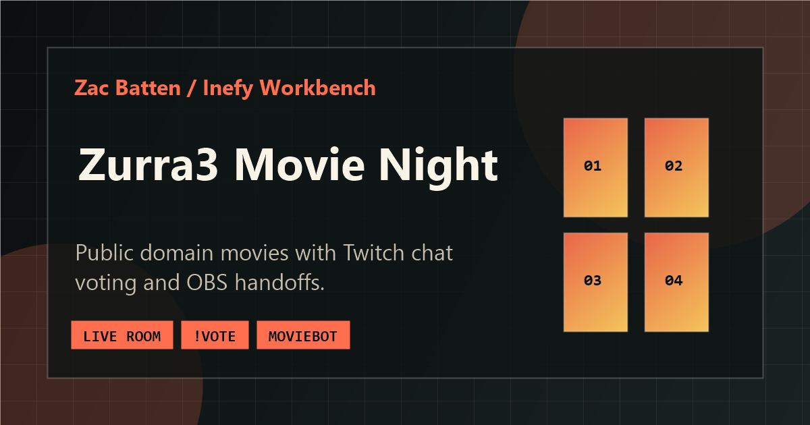

TraverseOps
A map-first field-operations sample for assets, inspections, work orders, imports, and reports.
Available for new work
Map-first field-operations UI.
Frontend, internal tools, Python automation, map UI, and browser apps. This site is the short version: what I build, three useful examples, and the fastest way to reach me.
whoami
Zac Batten — software developer
ls ./skills
frontend/ python/ automation/ map-ui/ canvas/
cat availability.txt
open to frontend & internal-tools roles
Selected work
These are the quickest ways to understand the kind of work I do.
A map-first field-operations sample for assets, inspections, work orders, imports, and reports.

A Python bot that turns Twitch chat votes into OBS playback for movie nights.

A browser drawing tool with Canvas state, undo/redo, import/export, zoom, and mobile controls.
At a glance
Interfaces that organize real workflows — asset maps, imports, reports, and role-aware screens — not just static pages.
Python scripts and bots that handle repeated operational work, with token refresh, reconnect paths, and tests.
Canvas drawing tools, map interfaces, catalogs, and games — built with vanilla JavaScript and shipped on GitHub Pages.
Keep browsing
Work is the main index. Case studies, notes, and experiments are secondary paths.